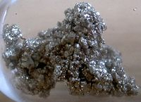

Numero atomico: 38
Massa atomica: 87,62
Temperatura di fusione (°C): 777
Temperatura di ebolizione (°C): 1384
Energia di prima ionizzazione (kj/mol): 549
Elettronegatività (secondo Pauling): 0,95
Densità: 2,60
Numeri di ossidazione: +2
Configurazione elettronica: 1s2, 2s2, 2p6, 3s2, 3p6, 3d10, 4s2, 4p6, 5s2
Maggiori Informazioni